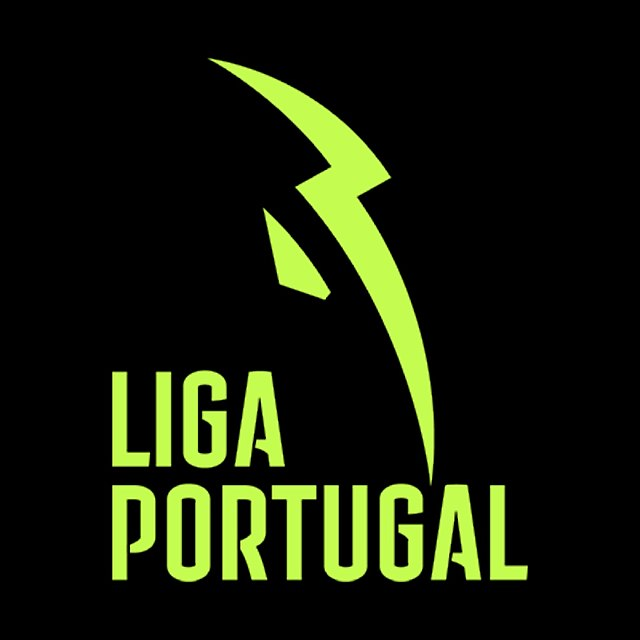

Portugal
La Primeira Liga, también conocida como Primera División de Portugal o por motivos de patrocinio como Liga Portugal Betclic, es la máxima categoría del sistema de ligas de fútbol de Portugal. Comenzó a disputarse en la temporada 1934/35 bajo el nombre de «Liga Experimental». A partir de la temporada 1938/39 sustituyó al Campeonato Nacional para designar al campeón portugués, y desde entonces se ha celebrado sin interrupciones.
El campeonato fue establecido por las federaciones regionales más importantes de la época: Lisboa, Oporto, Setúbal y Coímbra, de modo que los participantes eran los clubes destacados de cada distrito. A partir de la edición 1945/46, la Federación Portuguesa de Fútbol (FPF) abre el torneo a toda Portugal continental con el actual sistema de divisiones, si bien los archipiélagos de Azores y Madeira quedaron excluidos por razones logísticas hasta la década de 1970.
